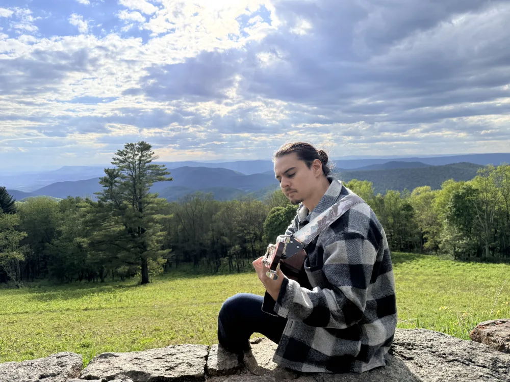
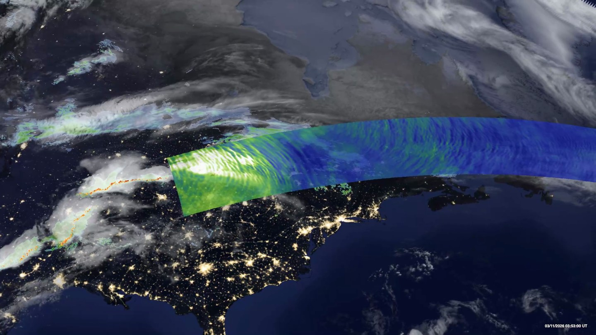
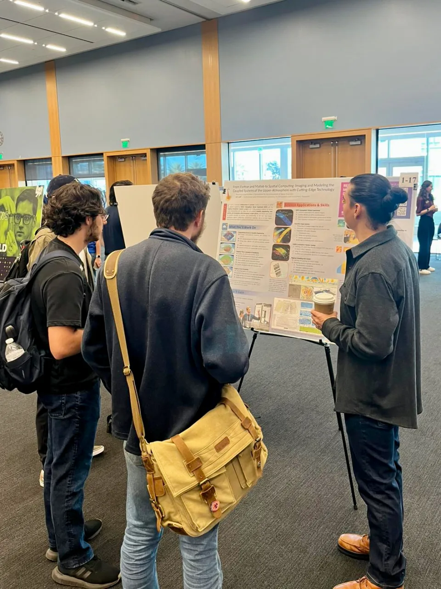
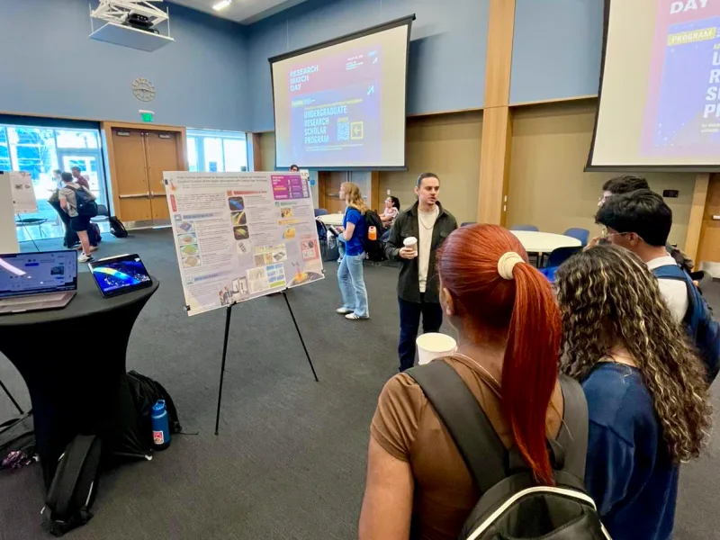
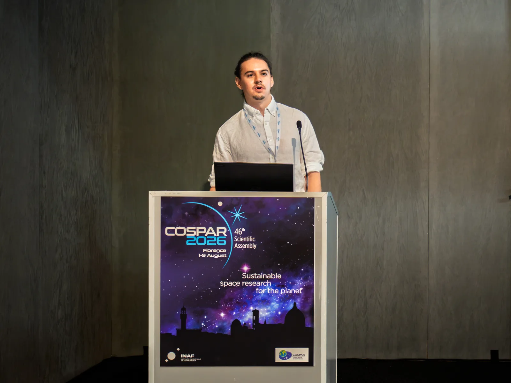
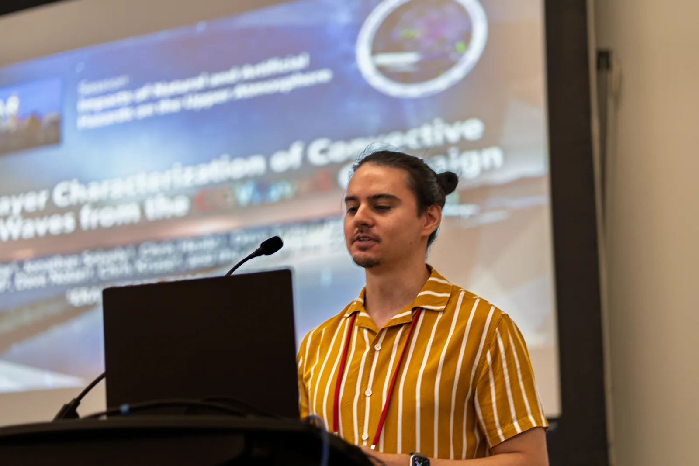
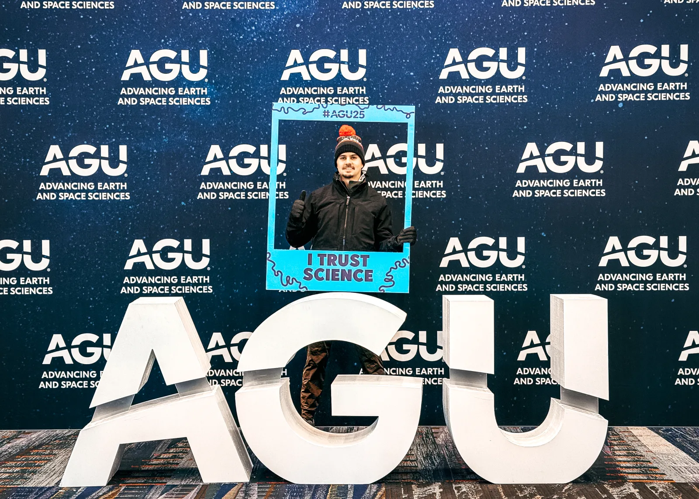
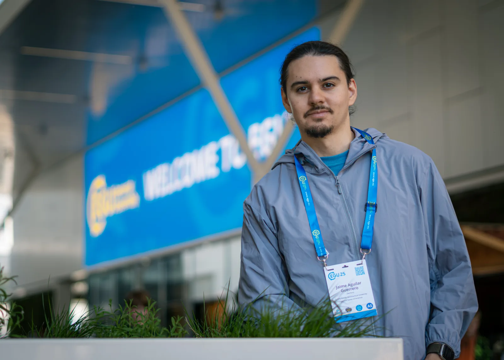

Jaime Aguilar Guerrero
Research Scientist · Embry-Riddle Aeronautical University
Atmospheric research through observations,
numerical modeling, and visualization.


About
Research on atmospheric waves connects weather in the lower atmosphere with the mesosphere, thermosphere, and ionosphere through observations, numerical simulations, and scientific visualization.
Research expertise
This research combines numerical simulations, satellite and ground-based observations, mathematical and spectral analyses, and scientific visualization to investigate connections across atmospheric layers and scales.
Explore scientific questions and research approachesAWE · Atmospheric Waves Experiment
As principal investigator for the Embry-Riddle student collaboration on NASA’s Atmospheric Waves Experiment (AWE), I support students in developing numerical simulations and comparing AWE observations with Global Navigation Satellite System (GNSS) measurements to investigate atmospheric gravity waves and their ionospheric signatures.
This AWE work connects satellite measurements with weather observations and models to study convective sources, wave propagation, and the upper atmosphere’s response. Complementary 3D visualizations help students and collaborators interpret these observations in their geographic and atmospheric context.
Explore the AWE visualizations at USUMITIGATE
I currently serve as project manager for this Office of Naval Research MURI project, working with collaborators across Embry-Riddle, Arizona State, Boise State, Boston University, and the University of Miami.
MITIGATE studies how gravity waves generated by severe weather travel through the atmosphere and disturb the ionosphere. By connecting weather, wave-dynamics, and ionospheric models with observations, the team aims to improve understanding and forecasting of disturbances that can affect radio communications, positioning, and navigation.
MITIGATE announcementAtmoSense / AIRWaveS
Previously, I served as project manager for AIRWaveS within DARPA’s AtmoSense program, collaborating across universities and government laboratories.
AtmoSense—Atmosphere as a Sensor—investigated how energy from short-lived events, such as storms, earthquakes, and volcanic eruptions, travels from Earth’s surface into the upper atmosphere and ionosphere. Its goal was to understand whether those distant signatures could help detect and characterize the original events. AIRWaveS combined simulations from source to sensor with field experiments to test which signals could be detected and to validate the models.
AIRWaveS projectAtmoSense programResearch & visualization
Selected scientific questions and approaches connecting atmospheric sources, wave propagation, and upper-atmospheric responses.
Scientific investigations & analysis
Sources and atmospheric coupling
Investigations examine how tropospheric sources, particularly convective systems, generate atmospheric waves and connect weather with responses in the upper atmosphere and ionosphere. Observations of source regions and wave signatures at different altitudes provide complementary evidence of these connections. Studying the source, propagation environment, and upper-atmospheric response together helps establish how processes in one atmospheric layer relate to structures observed in another.
Numerical simulations and observational comparisons
Comparisons of numerical simulations with satellite and ground-based measurements draw on AWE, AIRS, airglow, and GNSS observations. They account for what each instrument samples, its observing geometry, and the spatial and temporal scales represented in the model. Experience with satellite orbit determination and attitude analysis also informs this work, supporting the interpretation of modeled and observed wave structures while accounting for differences in how those structures are measured.
Mathematical and spectral analysis
Mathematical and spectral analyses characterize wave periods, wavelengths, and propagation directions in observations and simulations. Comparisons across spatial and temporal scales, instruments, and atmospheric regimes help connect wave signatures that represent different parts of a multilayer system. Atmospheric reanalysis and model products—including ERA5, MERRA-2, NAVGEM, and WACCM-X—provide background conditions for interpreting how the atmospheric environment influences wave propagation between layers.
Scientific visualization & immersive exploration
Spatial visualization brings observations and simulations into a shared geographic and atmospheric context. It supports exploration of wave structure, comparison of modeled and observed features, and communication of relationships across layers and scales.

Featured visualization
AWE in three dimensions
These AWE visualizations place satellite observations of atmospheric gravity waves in geographic and atmospheric context, alongside clouds and weather systems. Explore the March 2026 case study and other interactive models and videos in the official USU gallery.
Open the USU gallery awe.physics.usu.eduExtended reality & spatial computing
Blender supports the development of 3D scenes from volumetric atmospheric simulations and georeferenced observations for scientific exploration. Extended reality (XR) work includes hands-on experience with Apple Vision Pro and augmented reality headsets, allowing researchers and wider audiences to examine spatial relationships from different viewpoints. Atmospheric and space-physics context guides the presentation and interpretation of the data.
Read the Eos perspective on XR in Earth and space scienceStudent mentoring
Helping undergraduates turn scientific questions into analyses and visualizations.
Undergraduate mentoring focuses on developing MATLAB, Python, and Blender skills for atmospheric research. Programming and data analysis connect with 3D visualization to study multilayer systems, from weather in the lower atmosphere to responses in the upper atmosphere and ionosphere.
Students receive guidance in working with observations and simulations, exploring wave structure through spectral analyses, and bringing their results into spatial context. The emphasis is on understanding the science behind each calculation and visual choice, so students can interpret their results and communicate them clearly.


Eos · Science News by AGU 10 July 2026
Extended Reality Offers Opportunities for Scientific Show-and-Tell
How immersive tools can help researchers work with Earth and space science data.
Read the article in Eos
Selected publications
ORCID- Publication
Three-Dimensional Numerical Modeling of Coseismic Atmospheric Dynamics and Ionospheric Responses in Slant Total Electron Content Observations
Inchin et al. · Geophysical Research Letters, 51(21), e2023GL108068
- Publication
Simulation of Infrasonic Acoustic Wave Imprints on Airglow Layers During the 2016 M7.8 Kaikoura Earthquake
Inchin et al. · Journal of Geophysical Research: Space Physics, 127(3), e2021JA029529
- Publication
Mesopause Airglow Disturbances Driven by Nonlinear Infrasonic Acoustic Waves Generated by Large Earthquakes
Inchin et al. · Journal of Geophysical Research: Space Physics, 125(6), e2019JA027628
Conferences & presentations
Sharing atmospheric research through talks, observations, and visualization.

COSPAR 2026 · · Florence, Italy
Synthetic Multi-Instrument Forward Modeling for Convectively Driven AGW in MAGIC, GEMINI, and FIGMENTS
Session C0.2 Advances in Remote Sensing of the Middle and Upper Atmospheres and Ionosphere from the Ground and from Space, including Sounding Rockets, Novel Radar and Multi-instrument Studies
Comparing synthetic observations of convectively driven atmospheric gravity waves across numerical models.
Read conference abstract ↗ · Session program ↗
CEDAR 2026 · · Des Moines, Iowa, USA
Multi-layer Characterization of Convective Gravity Waves from the CGWaveS Campaign, AWE, and GNSS
Session Impacts of Natural and Artificial Hazards on the Upper Atmosphere
A multi-instrument view of convective gravity waves, connecting campaign observations with AWE and GNSS measurements.
Presentation program ↗
AGU 2025 · New Orleans, Louisiana, USA
Multi-instrument Synoptic Characterization of Deep Convective Events and Associated Gravity Wave Responses Over CONUS Using AWE, AIRS, TEC, and LLITED
Session SA013 Gravity Waves, From the Surface to the Edge of Space
Title from the existing abstract PDF; confirm that it matches the photograph and final presentation.
Read abstract (PDF)
EGU 2025 · · Vienna, Austria
Observing Mesospheric Gravity Waves with NASA’s AWE Mission and Correlating to GNSS TEC Maps
Session ST3.3 Dynamics, Chemistry, and Coupling in the Middle Atmosphere and MLT Regions
Comparing mesospheric wave observations with ionospheric total electron content to investigate upward-propagating gravity waves.
Read conference abstract ↗ · Session program ↗Conference photographs © Jaime Aguilar Guerrero.